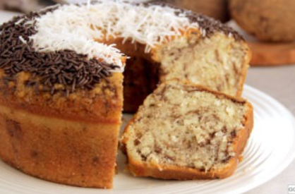

Delicioso e Fácil de Preparar!
Em apenas 1h, você terá um bolo saborosíssimo para servir no café da tarde! Sinceramente, o mais difícil dessa receita será aguentar a vontade de atacar essa receita saborosa quanto antes. O bolo formigueiro tradicional é super fácil de fazer e merece seu título de clássico consagrado!
Com gostinho de infância, o bolo formigueiro tradicional é sempre a melhor aposta. Afinal, todos os seus ingredientes são de fácil acesso e seu modo de preparo é tranquilo até para quem não tem muita afinidade com a cozinha!
Receita do bolo formigueiro tradicional
Tempo de preparo: 1h
Rendimento: 8 porções
Nível de dificuldade: fácil
Ingredientes:
- 1 xícara (chá) de óleo
- 3 ovos
- 1 e 1/3 xícara (chá) de leite
- 2 xícaras (chá) de açúcar
- 3 e 1/2 xícaras (chá) de farinha de trigo
- 100g de coco ralado
- 1/2 xícara (chá) de chocolate granulado
- 1 colher (sopa) de fermento em pó químico
- Óleo e farinha de trigo para untar
- Coco ralado em flocos e chocolate granulado para polvilhar
Modo de preparo:
- Bata no liquidificador o óleo, o ovo, o leite e o açúcar até homogeneizar.
- Despeje em uma tigela e misture a farinha, o coco, o granulado e o fermento com uma colher.
- Despeje em uma fôrma de buraco no meio de 24cm de diâmetro untada e enfarinhada, e leve ao forno médio, preaquecido, por 30
- Deixe amornar e desenforme.
- Polvilhe com coco, granulado e sirva.